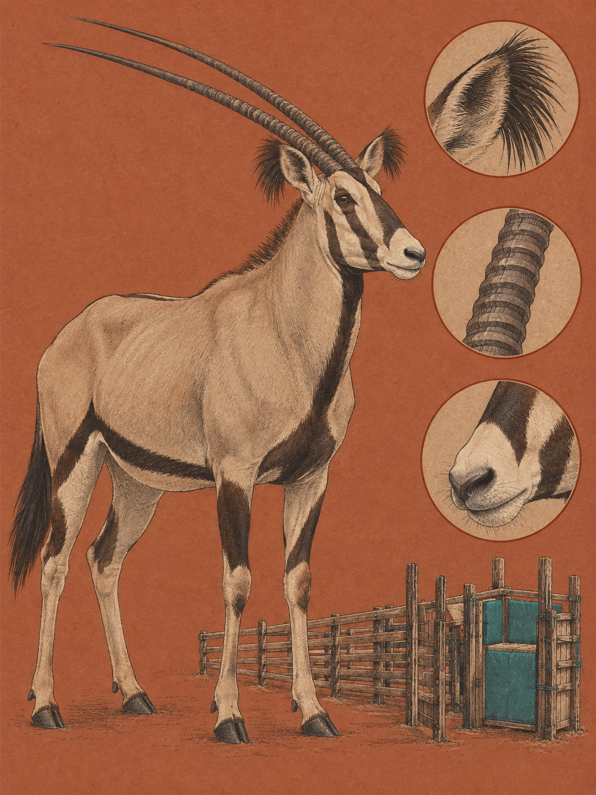

TSAVO / AMBOSELI
Oryx callotis
Swahili: „Choroa“; Maa: „Ol-kimosorogi“; Kamba: „Kimasarok“

Am Rand des Wasserlochs stehen die Tiere mit dem Hinterteil zur Sonne und senken die Köpfe in den eigenen Schatten. Der Büschelohr-Oryx sieht aus, als würde er sich vor der Hitze verbeugen. Sein Fell ist fahlbraun bis rehbraun, die Unterseite und die Schnauze sind weiß. Ein schwarzer Streifen trennt die helle Unterseite von der Oberseite, schwarze Bänder rahmen Stirn und Augen. Über den Ohrspitzen stehen Büschel aus schwarzen Haaren, bei ausgewachsenen Tieren 5,1 bis 7,6 Zentimeter lang. Beide Geschlechter tragen fast gerade Hörner, die nur leicht nach hinten gebogen sind. Auf ihrer unteren Hälfte sitzen im Durchschnitt 16 Ringe, bevor die Hörner glatt und spitz zulaufen. Die muskulöse Antilope ist an heiße, trockene Landschaften angepasst. Ihre wichtigste Fähigkeit sitzt jedoch nicht an den Hörnern, sondern tief im Kopf.
Der Gattungsname Oryx kommt aus dem Altgriechischen und bedeutet „Spitzhacke“ oder „Grabwerkzeug“. Die geraden Hörner erinnern an dieses Werkzeug. Das Artepitheton callotis setzt sich aus den griechischen Wörtern für schön und Ohr zusammen und verweist auf die dunklen Ohrbüschel. 1892 beschrieb der britische Zoologe Oldfield Thomas die Art als Oryx callotis. Das Museumsexemplar hatte W. L. Abbott während einer Expedition südlich des Tana-Flusses nahe Taveta gesammelt. Richard Lydekker stufte sie 1908 beziehungsweise 1912 als Unterart des Ostafrikanischen Oryx ein, Oryx beisa callotis. Im Swahili heißt das Tier Choroa, bei den Maa und Samburu Ol-kimosorogi. Eine historische Kamba-Aufzeichnung nennt Kimasarok, versieht den Namen aber mit dem Kürzel für Maa. Ob er ein Kamba-Wort ist, bleibt deshalb ungeklärt.
Die Hitze erreicht zuerst das Blut. Bei Paarhufern liegt im Schädel ein Geflecht aus vielen dünnen Gefäßen, das Karotis-Wundernetz. Es sitzt in einem Hohlraum, der von venösem Blut durchströmt wird. Die Luft, die durch die feuchten Nasengänge gelangt, kühlt dieses Blut ab. Warmes arterielles Blut vom Herzen gibt seine Wärme an das kältere Blut ab, bevor es das Gehirn erreicht. Das ist ein Gegenstrom-Wärmeaustausch, selektive Gehirnkühlung genannt. Lange galt die Erklärung, das Netz schütze das Gehirn vor tödlicher Überhitzung, während der Körper heiß werde. Diese reine Schutz-Hypothese wurde durch Messungen an freilebenden Spießböcken widerlegt. Die gesicherte Erklärung lautet anders: Das Karotis-Wundernetz unterdrückt den vom Hypothalamus gesteuerten Drang zu schwitzen und zu hecheln. Der Körper speichert vorübergehend Wärme und spart Wasser. Bei Wassermangel wird der Mechanismus früher und stärker aktiviert.
Eine zweite Spur führt aus dem Kopf in die trockene Luft. Für Wüstenhuftiere ist gesichert, dass sie Regen über Gerüche wahrnehmen können, die nach langen Trockenzeiten aus dem Boden aufsteigen. Im trockenen Boden sammeln sich Streptomyces-Bakterien. Trifft Regen auf die Erde, gelangen ihre Stoffwechselprodukte Geosmin und 2-Methylisoborneol in die Luft. Der Wind trägt sie weiter, und Riechrezeptoren in der Nasenschleimhaut binden die Moleküle. Dann kann eine gerichtete Wanderung zu den Niederschlagsgebieten einsetzen, um dem frischen Grün zu folgen. Dass ein Büschelohr-Oryx diesen Geruch genau 80 Kilometer weit wahrnimmt, ist jedoch nur vermutet und überliefert, nicht durch Messreihen belegt. Gesichert ist seine Landschaft: semiaride Grasländer, Buschland und Akazienwälder. Sukkulente Pflanzen vorausgesetzt, kann das Tier bis zu einem Monat ohne Oberflächenwasser auskommen.
Ende September und Anfang Oktober konzentrieren sich die Bestände im Tsavo und im Amboseli auf Restwasser an Flüssen, künstliche Wasserlöcher und noch feuchte Sumpfränder. Die Nahrungssuche verschiebt sich häufig in Nacht und Dämmerung, wenn Tau die Pflanzen feuchter macht. Der Büschelohr-Oryx frisst Gräser, Blätter, Knospen und Früchte. In der Mittagszeit ruht ein wild lebender Büschelohr-Oryx weniger als zwei Stunden im Schatten. Fehlt dieser, richtet er seine Körperachse parallel zur Sonne oder zum Wind aus, das Hinterteil zur Sonne, oder senkt den Kopf in den Schatten des eigenen Körpers. Auch eng stehende Gruppen spenden einander Schatten. Fünf bis 30 Tiere bilden Herden mit einer strengen Rangordnung. Die Fortpflanzung erfolgt ganzjährig; nach neun Monaten trägt das Weibchen ein Kalb aus. Sobald die kleine Regenzeit beginnt, ziehen die Tiere den Gerüchen folgend in offene Ebenen, in denen frisches Gras sprießt. Dort werden sie selbst zur Nahrung für Löwen, die im Tsavo-Ökosystem von dieser Beute abhängig sind.
Menschen versuchten, diese Anpassung zu nutzen. In den 1970er Jahren erprobten J. M. King, C. R. Field und Martin Anderson auf der Galana Ranch die Domestizierung von Wildtieren. Büschelohr-Oryxantilopen wurden bewegungsunfähig gemacht, in kleinen gepolsterten Zellen gezähmt und in 40-Hektar-Koppeln gebracht. Wegen ihrer Anpassung an Dehydrierung speicherten sie Körperwasser effizienter als Hausrinder. Das Projekt endete aus bürokratischen und politischen Gründen, eine teilweise semidomestizierte Population blieb jedoch zurück. Überliefert ist auch die Geschichte der Löwin Kamunyak im Samburu National Reserve. Die Samburu nannten sie „Die Gesegnete“, nachdem sie in den frühen 2000er Jahren verwaiste Kälber dieser Antilope angenommen und vor anderen Raubtieren geschützt hatte. Heute gilt der Büschelohr-Oryx als gefährdet. Geschlechtsreif sind schätzungsweise 3.000 bis 4.000 Tiere. Habitatverlust durch Landwirtschaft und Wilderei nach Fleisch und Häuten bedrohen ihn.
Am Wasserloch steht die Herde noch immer in einer Linie zur Sonne. Ein Tier hebt den Kopf, ein schwarzes Ohrbüschel zittert im trockenen Wind. Dann riecht irgendwo weiter entfernt der Boden nach Regen, und die Köpfe drehen sich aus dem Schatten.
Auf der Galana Ranch am Rand des Tsavo East wurde in den 1970er Jahren versucht, Büschelohr-Oryxantilopen für die Haltung zu zähmen. Die Tiere kamen in gepolsterte Zellen und anschließend in 40-Hektar-Koppeln. Ihr Körper konnte Wasser während der Dürre effizient speichern, doch das Projekt endete aus bürokratischen und politischen Gründen. Im Samburu National Reserve erzählt die Überlieferung von der Löwin Kamunyak, „Die Gesegnete“. In den frühen 2000er Jahren soll sie verwaiste Kälber dieser Antilope angenommen und gegen andere Raubtiere geschützt haben. Bei den Maa-sprachigen Samburu gehört der Büschelohr-Oryx neben Gerenuk, Grevyzebra, Netzgiraffe und Somali-Strauß zu den „Samburu Special Five“. Heute gilt der Büschelohr-Oryx auf der Roten Liste als „Vulnerable“, gefährdet. Geschätzt werden 3.000 bis 4.000 geschlechtsreife Tiere, eine ältere Gesamtschätzung lag bei etwa 17.000. Hauptbedrohungen sind der Verlust von Lebensraum durch Landwirtschaft und Wilderei nach Fleisch und Häuten. Im Februar 2017 zählten Kenya Wildlife Service und Tsavo Trust das Tsavo-Mkomazi-Ökosystem aus neun Leichtflugzeugen.
Wo und wann: Suche im Tsavo East, Tsavo West oder Amboseli Ende September und Anfang Oktober an Restwasser, Flüssen und Sumpfrändern. Die kühlen Morgenstunden und der späte Nachmittag sind günstig. Zur Mittagszeit lohnt sich ein ruhiger Ansitz, wenn sich die Herde zur Thermoregulation ausrichtet. Bewege dich nicht hastig und nähere dich nicht gegen den Wind.
Brennweite: 150 bis 600 mm oder 100 bis 400 mm für scheue Tiere und die schwarzen Ohrbüschel. Für die Herde in der flachen Tsavo-Landschaft eignen sich 26 bis 60 mm oder 45 mm.
Bild-Idee: Zeige mehrere Tiere in derselben Achse, mit den Hinterteilen zur Sonne und gesenkten Köpfen. Ein Detailbild kann die fransenartigen Ohrbüschel oder die 16 Ringe auf der unteren Hornhälfte herausarbeiten.